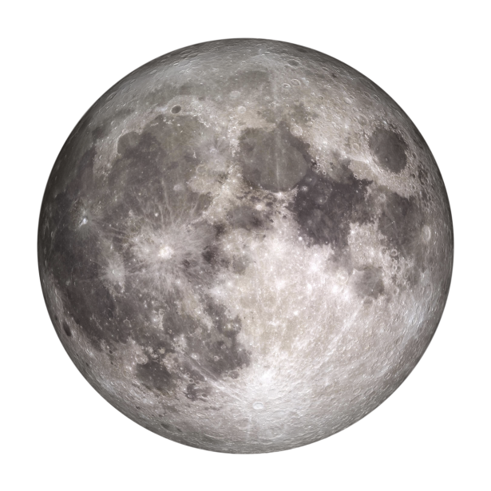

|  | Der Mond ist 40 Millionen Jahre älter als gedacht |
| Nach heutigem Wissen ist der Mond entstanden, als einst die Ur-Erde mit dem Himmelskörper Theia kollidiert ist. Aber wann war das genau? Neue Untersuchungen von Mondstaub, der von den Astronauten der Mission Apollo 17 zur Erde gebracht worden war, ergaben ein Mindestalter von 4,46 Milliarden Jahren. Damit sei der Erdtrabant 40 Millionen Jahre älter als es sich aus bisherigen Messungen schließen ließ, berichtet ein Forschungsteam nun im Fachblatt „Geochemical Perspectives Letters“. ...mehr erfahren |
 |
Nasa will noch 2023 zum Mond aufbrechen |
| Cape Canaveral – Mehr als 50 Jahre ist es her, dass mit Apollo 17 die letzte US-amerikanische Mission auf dem Mond landete – und genauso lange hat kein Raumschiff der USA mehr auf dem Erdtrabanten aufgesetzt. Diese lange Durststrecke soll in den nächsten Wochen ein Ende finden: Am Heiligabend soll vom legendären Kennedy Space Center Cape Canaveral in Florida aus die neue Rakete „Vulcan Centaur“ der „United Launch Alliance“ (ULA) starten und schon im Januar ankommen...mehr erfahren |
/cloudfront-eu-central-1.images.arcpublishing.com/madsack/4IUSXBXJ7H45ZC5UQTQEGBYAO4.jpg) |
Mondgestein enthält Wasserstoff |
| Ein Forschungsteam des US-Forschungslabors des Marine NRL (Naval Research Laboratory) hat in den Mondgesteinsproben der Apollo-Missionen Wasserstoff entdeckt. Dieser könnte in Kombination mit Sauerstoff einen möglichen Wasservorrat für künftige Astronautinnen und Astronauten bieten. Ein möglicher Grund dafür könnten Sonnenstürme sein ...mehr erfahren |
 |
China hat neuen Partner für seine geplante Mondbasis |
| Am 6. Dezember 2023 unterzeichnete Ägypten ein Abkommen mit China über gemeinsame Raumfahrtaktivitäten, zu denen auch die internationale Mondforschungsstation ILRS gehört. Das Abkommen wurde in Peking von Zhang Kejian (Administrator der chinesischen Raumfahrtbehörde CNSA) und Sherif Sedky (Chief Operating Officer der ägyptischen Raumfahrtagentur EGSA) unterzeichnet. ...mehr erfahren |